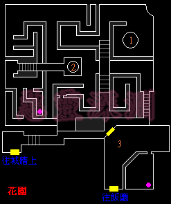
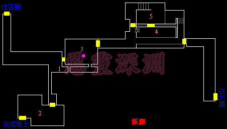

|
惡靈古堡～惡靈古堡４----地圖攻略～3-3
|
|
攻略內容以Normal為主，地圖上的紫色圓點●表示高價寶物的位置 。
 從3處開始，先往小房間拿高價寶物真珠とルビーの鏡（珍珠和紅寶石的鏡子），並且和武器商人談話來整理裝備 。 購物指南（new）：
桌上有File 第三組織的女性。往飯廳。
 飯廳四周掛了四幅綠底上面有文字的板子，上面寫著「極上のワインはデザートの後で（極品葡萄酒在甜點的後面）」、「パンよ りチキンを（麵包接著是烤雞）」、「チキンの後デザートで（烤雞的後面是甜點）」、「最期の晩さんでは、最後の品で全てが 決まる（ 最終的晚餐，全部品項中最後的餐點決定一切）」，前三句是說明上菜的順序，找出最後一道菜，然後到編號1的地方按 鈴，並且射擊畫作中的最後一道菜，射錯了只要再按鈴重新來過就好，成功後往編號3房間的門就打開了。
進入編號3的房間不久，就被陷阱鐵籠給困住了，而且還有鐵爪男和一群邪教徒作伴，無論如何趕快使用小刀或機關槍破壞門鎖逃 出鐵籠外，先避開鐵爪男再說，鐵籠中央的寶箱中有高價寶物宝飾のある砂時計（珠寶裝飾的沙漏），射擊畫作的長廊上也有稀有 的麥格農手槍彈。 編號2的房間有些彈藥和道具可以拿，注意其中有一條蛇。從這裡破壞門鎖，可以通往城牆上。 到達編號4的房間後，下方被幾個邪教徒圍住的是橋樑的開關，打開開關後要小心從Leon後方來的追兵，橋樑打開後即可到對面去， 橋樑上利用油燈來攻擊敵人。 編號5的地方有許多的道具，其中還包括火箭砲，在往大廳的路上就有武器商人了，盡量把東西都拿走吧。 購物指南（new）：
終於入手更大的公事包了，剛才沒有拿火箭砲的玩家可以回頭去拿。可視自己的需要決定要保留或變賣。 離開這個地圖往大廳，遇上Luis被殺的事件，本章節結束。
疑難解答
宝飾のある砂時計（珠寶裝飾的沙漏） 12000ptas 未經許可禁止轉載連結 |
||||||||||||||||||||||||||||||||||||
惡靈深淵Biohazard Abyss http://98.to/coolbio